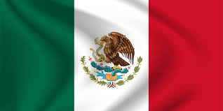

About me
I am originally from Mexico, where I pursued a degree in Business Administration as my first academic endeavor. However, my deep passion for technology ignited a desire for a second career in web development. The Pathway program has opened an incredible door for me, allowing me to step onto this exciting new career path. This path not only promises improved job prospects but also provides the flexibility to work from the comfort of my home.
Mexico
It is the eleventh most populous country in the world, with a population of approximately 118 million inhabitants. The mother tongue is Spanish, which coexists with 67 indigenous languages. Mexico is a representative and democratic republic, made up of free states, united by a federal pact.